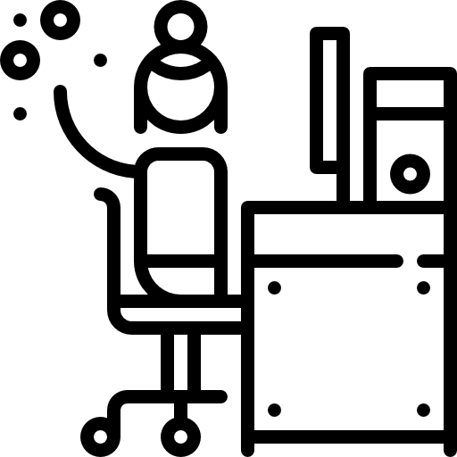

인사제도
인사방침

롯데기공은 직원을 가족과 같이 생각합니다
사원 개개인의 안정과 발전이 곧 롯데기공의 발전입니다
인사
롯데 인사제도는 가족주의적 조직문화를 바탕으로 직원들 모두가 협동하며 풍요로운 삶을 누릴 수 있도록
지원 및 동기 부여를 추구하고 있습니다. 또한 인력운영에 있어서 인플레이션을
최소화하고 소수정예주의를 지향하여 경제가 어려운 여건에서도 직원들이 안정적으로 근무할 수 있는
인력관리 시스템을 구축하여 국가 경제와 사회의 발전에 이바지하고 있습니다.
이동 & 배치
이동은 각자의 능력과 적성, 발전 가능성을 고려하여 적재적소에 배치함을 원칙으로 하고 있습니다.
그리고 직무 순환제도를 실시, 경력개발을 통해 Generalist로 육성하고 있으며, 직무의 전문성을 개발하여
Specialist로 육성하는 종합적 경력개발제도(CDP)를 운영하고 있습니다.
또한 신규사업 추진이나 그룹 내부에 인력 소요가 발생할 경우 우선적으로 그룹 내부 인력을 충원하는
시스템을 통해 직원들이 그룹사 간에 원활히 이동할 수 있습니다.
- 전문가 개념 (SPECIALIST)
- 유사직무 수행
- 업무 전문성 강화
- 일반관리자 개념 (GENERALIST)
- 관리, 영업 경력 보유
- 종합적 관리능력 배양
- SPECIALIST+GENERALIST
- 장점 병행
평가제도
직원들에 대한 평가는 년 1~2회에 걸쳐 실시되며, 평가 결과는 이동/배치, 승진, 보상, 교육 등에 반영되고 있습니다. 공정한 평가를 통해 성과 및 보상을 공정하게 배분하고, 목표를 합리적으로 관리함으로써, 조직의 경쟁력을 극대화합니다. 우수한 인력에 대해서는 그에 상응하는 보상으로 직원에게 동기를 부여합니다.
이는 회사의 비전과 목표달성에 큰 도움을 주고, 우수인재 확보 및 직원들의 성장 기회 제공에 이바지합니다.
- 공정한 평가
- 공정한 보상
- 직원 동기부여
- 조직 목표달성
- 우수인재 확보
복리후생
롯데기공은 직원들의 풍요롭고 안정된 생활을 보장하고
생활의 질을 향상시키기 위하여 다양한 복리후생 제도를
시행하고 있습니다.
-

자녀학자금 지원
입학축하금, 중고등학교 등록금전액
대학교 등록금(자녀2인 100%) 지원 -

경조사 지원
각종 경조사시 경조금 지급
및 경조휴가 부여 -
하기휴가
매년 5일간 하기 유급 휴가 부여
및 휴가비 지급 -

여가지원
전국 유명관광지 콘도미니엄 사용가능
하계 휴양소 운영 및 휴가비 지급 -
주택지원
지방 근무자 사택제도, 주택구입 및
전세자금 대출 지원제도 - 
직장생활지원
교통비, 김장보너스,
각종 선물(명절, 창립기념일 등) 지급
장기근속자 포함 및 여행실시,
모범사원 해외연수 -
의료지원
본인 및 피부양 가족에 대한
건강진단 실시